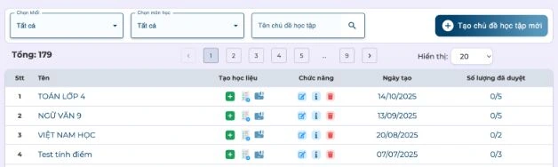
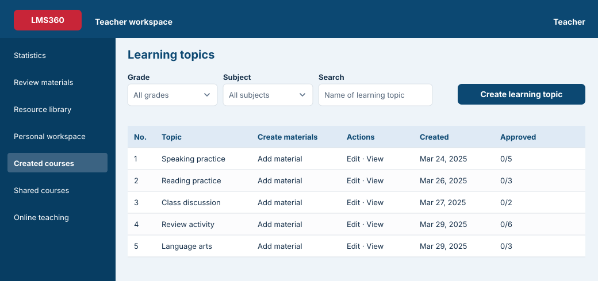
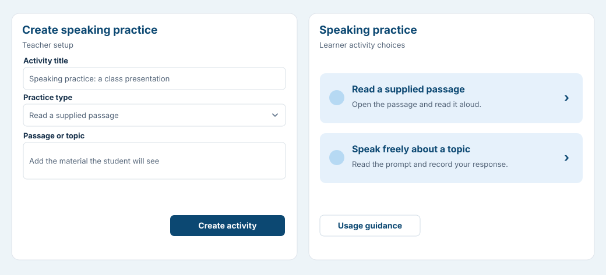
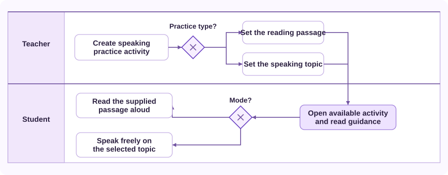

Who uses this product
LMS360 is the learning workspace in the product suite. The design shows distinct teacher and student surfaces, including preparing and using speaking activities.
| Role | What they do | What the interface must support |
|---|---|---|
| Student | Opens speaking practice and chooses an exercise type. | Guidance and distinct options for reading a passage or speaking from a topic. |
| Teacher | Uses teacher-side creation and exercise details. | Inputs suited to the activity type and an interface distinct from the learner view. |
| School administrator | Uses school administration surfaces in the broader platform design. | Role-specific navigation with administrative tasks separated from learning or teaching. |
What the learning workspace does
The LMS360 designs include the homepage, online learning, teacher setup and student practice views. This case shows how the speaking-practice experience connects the teacher’s setup to the student’s activity.
Two modes in the speaking-practice flow
A student reads a supplied passage or speaks freely about a topic. Usage guidance and activity cards orient the student before selecting an exercise. Teacher-facing frames separate setting up the exercise from completing it.
A separate admissions workstream
The placement brief defines the request owner, banner or popup format, location, mobile and desktop dimensions, display window and destination. The measurement requirements distinguish impressions, clicks and qualified leads, so each approved format can be tested against its expected action.
Figma designs and handoff
My Figma contribution
I mapped the teacher setup and student practice flows. The Figma screens show how an activity type governs the instructions, passage or topic the learner sees before recording. The teacher-facing list shows how materials can be filtered, reviewed and managed.
The gallery includes original Figma captures and English-language adaptations. Adapted screens use fictional records. Select an image to inspect it at full size.
Teacher and learner workspaces

The original frame combines filter fields, the create-topic action, pagination and actions for different learning materials.

Grade and subject filtering, material actions and review counts in the teacher’s workspace. Sample rows use fictional data.

The teacher’s selected activity type determines whether learners see a passage or topic. The cards and guidance set expectations before recording.
| Figma pattern | What the source shows | Handoff decision |
|---|---|---|
| Speaking activity cards | The learning screen offers reading a supplied passage and speaking freely on a topic. | Clearly label the mode and the type of content it requires. |
| Guidance and reusable actions | The board has usage guidance, speaker icons and compact buttons around the practice flow. | Keep the instruction state separate from the student’s submission action. |
| Teacher and student frames | The teacher-side create view is separate from the learner’s exercise screens. | Trace prompt or passage inputs to what the learner sees. |
Workflow · teacher setup to student practice

The activity type determines whether teachers supply a passage or a topic and what the learner sees before practice.
Campaign placement handoff
| Input | Review question | Acceptance check |
|---|---|---|
| Placement and device | Which template is approved for this surface and device? | Validate banner or pop-up rendering for each target. |
| Campaign destination | Where should the approved placement send prospective learners? | Verify the same approved destination from each applicable surface. |
| Publish and review | Which stakeholder provides the content and who confirms placement? | Compare the published placement to the approved request. |